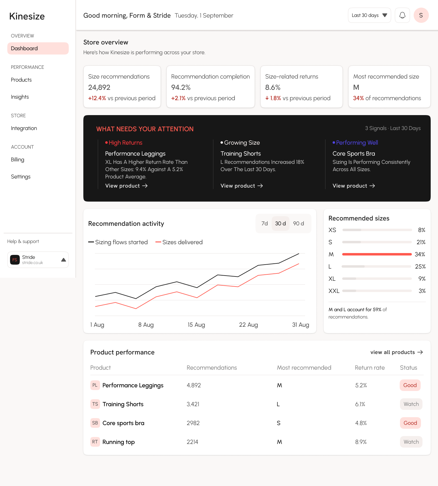
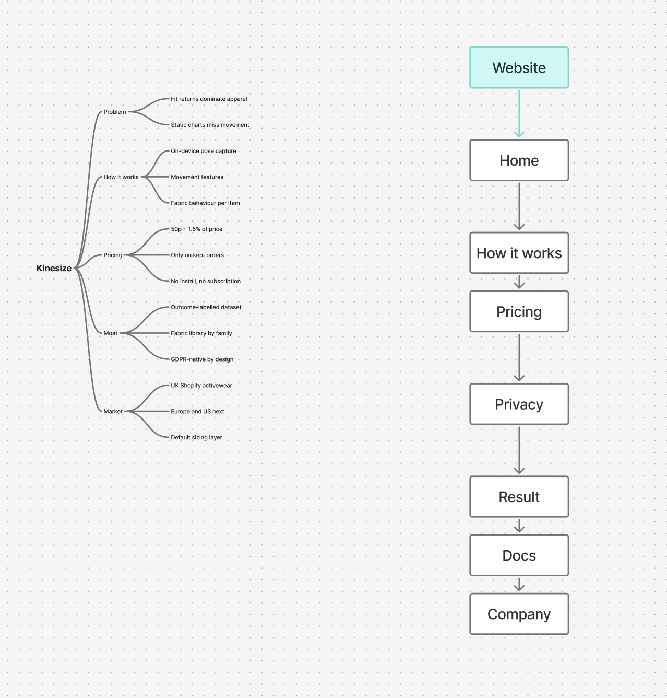

Kinesize
A merchant dashboard that turns sizing data into decisions. Movement-based size recommendations for sportswear stores, designed end to end to developer handoff.
- Role
- Product designer, end to end
- Client
- Hire My Idea
- Timeline
- Five weeks, Aug–Sep 2026
- Team
- Founder and me
- Surfaces
- Web dashboard, Shopify fit widget, marketing site
- Status
- Site approved with no revisions. Dashboard dev-ready. Dropped before build.

01The problem
Sportswear is returned for size more than almost any other category. A size chart maps a chest measurement to a Medium but says nothing about how a compression legging behaves differently from a relaxed short. Shoppers order two sizes and send one back. Merchants absorb the cost.
Kinesize recommends a size from how a garment moves. The shopper does a short movement capture on their phone, processed on the device and never uploaded. Those movement features are matched against each garment's fabric family and fit intent. Merchants pay 50p plus 1.5% of the item price, only on orders the customer keeps.
I designed the whole surface: the merchant dashboard, the fit widget on product pages, and the marketing site that sells it.

02What I designed
Merchant dashboard
- Login, sign-up, password reset, team invite
- Four-step setup checklist
- Dashboard in pre-live and live states
- Products, insights, integration, billing, settings
- Empty, error and success states throughout
Fit widget
- Shopper-facing capture and recommendation
- Sits inside any Shopify theme
Marketing site
- Home, How it works, Pricing, Privacy, Result, Docs, Company
- Four colour directions explored
- Approved by the client with no revisions
03Setup is a checklist, not a wizard
Going live takes four jobs that rarely happen in one sitting or by one person: install the Shopify app, tag each product with fabric family and fit intent, add the widget to the theme, flip the switch. The theme edit often needs a developer.
A wizard would block everything behind whichever step needs someone else. So setup is a persistent checklist on the dashboard home, with a progress bar and one line per step on what it involves. Leave at step two, come back tomorrow, nothing is lost. A separate "set up but not live" state stops a finished store from seeing an empty analytics page.
Rejected: a full-screen stepper. Demos well, assumes one person with every permission.

04The dashboard answers "what do I do", not "how is it going"
My first layout was chart-first. It looked like analytics and told the merchant nothing they could act on. A store owner opening Kinesize has one question: is anything wrong, and which product?
The final layout leads with four numbers, then a dark "What needs your attention" panel: high returns on one size, a size growing in recommendations, a product performing well, each linking to that product. Charts and the product table come after. The panel is dark on a light page because it is the one place the dashboard is telling the merchant something rather than showing data.
05Products are the unit, and fabric is required
Most sizing tools treat a product as a size chart. Kinesize treats it as a garment with a fabric family and a fit intent, because a compression knit and a woven short in the same size label behave nothing alike on a body. I pushed for fabric family to be a required field, not an optional refinement.
Product setup works from the merchant's own catalogue, with both fields added inline and bulk-editable where products share construction. Every insight downstream keys off the product, so the merchant always lands somewhere they can act.
06Craft and system
- States before polish. Empty, error and success states designed for every module before high fidelity, so the developer never had to invent one.
- One system, three surfaces. Dashboard, widget and site share type, colour, spacing and components.
- Colour was a decision. Four directions for the site, side by side. The client chose the first, without notes. The dashboard keeps one warm action colour against neutrals so the attention panel is the loudest thing on the page.

07Outcome
The marketing site was approved by the client with no revision requests. The dashboard and widget reached dev-ready with annotated handoff and a setup-to-live prototype. The project was dropped before build when the company wound down.
What I'd have measured
- Setup completion and time to go live. The checklist exists to move this number.
- Recommendation completion rate. If shoppers abandon the widget, it is asking too much.
- Size-related return rate per product. The only metric that pays for the product.
What I'd do next
- Usability-test the setup with five merchants, especially the theme edit step.
- Calibrate the attention thresholds against real return data.
- Design a bulk fabric-and-fit editor for stores with hundreds of SKUs.